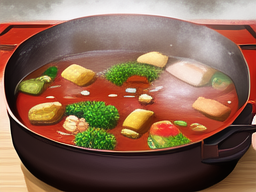
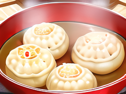
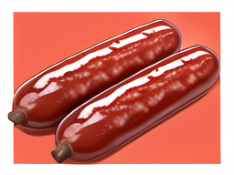

东北美食推荐
东北地区的美食不但有地道的东北大锅菜、东北水饺、东北哈尔滨红肠等等，而且还有很多的特色小吃和特色菜肴。接下来让我们一起来看看那些最有名、最好吃的美食吧。
东北大锅菜

东北大锅菜是东北地区非常有名的一道菜肴，它不但味道很好，而且烹饪方式独特，很适合多人共同品尝。
东北水饺

东北水饺是东北地区非常有名的一个特色小吃，它不但口感鲜美，而且非常有营养价值，是很适合在东北这个寒冷的地区食用的。
东北哈尔滨红肠

东北哈尔滨红肠是东北地区四季中最好的零食之一，这种红色肠衣和瘦肉混合的美食，不仅味道好，营养价值也非常高。